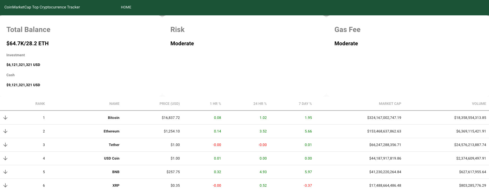
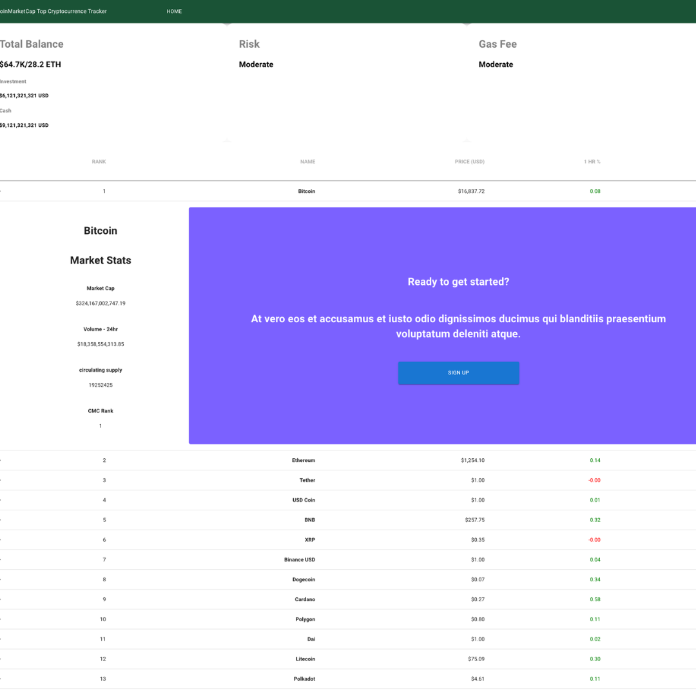

Bug Tracker Project
About
A simple and handy tool for crypto currency investors to track the price, marketcap, and predict possible future price of the top 10 crypto currency.
Stack
- JavaScript
- HTML
- CSS
- ReactJS
- Redux
- NodeJS
- Heroku
- Netlify
- MaterialUI
GitHub Links
Github Frontend Github backendVideo Walkthrough
Watch VideoLive
Live LinkProject Details
I wanted to build a responsive web application that displays real-time data of the top 10 cryptocurrencies using the coinmarket cap API.
Web Stack and Explanation
Backend
For the backend, I chose to use Express, a simple and fast Node.js web framework, to fetch data from the CoinMarketCap API. I also used Axios, a promise-based HTTP client, to make HTTP requests to the API. The backend was implemented in a separate folder named "backend" inside the root folder of the project.Frontend
Frontend: The frontend was built with Create React App, a popular and widely-used tool for building React applications. React is a JavaScript library for building user interfaces, and is known for its fast rendering speed and ability to handle complex UI components. For styling, I used Bootstrap, a popular CSS framework, to quickly build responsive and mobile-friendly UI components.Problems and Thought Process
One of the main challenges I faced during the development of this project was handling the real-time data updates. I decided to implement a polling mechanism that fetches new data from the CoinMarketCap API every 5 minutes, and updates the UI accordingly. This was done using a setInterval function in the frontend that calls a function to fetch data from the backend API. Another challenge I faced was handling the large amount of data returned by the CoinMarketCap API. I needed to extract the relevant data for each cryptocurrency and display it in a clear and concise way. To accomplish this, I used various React components to render the data. Overall, the development of this project was a great learning experience for me, and I was able to create a functional and useful tool for tracking the performance of cryptocurrencies in real-time.